Target-field ambiguity
Softly averaging several source fields can destroy the semantic identity of a capability query. The update may point to no real teacher behavior.
DanceOPD: hard-routed sample-wise field matchingTreat every source capability as a velocity field, then learn where and how to query those fields on the student's own rollout.
Modern image generation demands a single model that unifies diverse capabilities, including text-to-image generation, local editing, and global editing. These abilities are rarely naturally aligned: editing can degrade T2I performance, while global and local editing can interfere with each other.
DanceOPD is an on-policy generative field distillation framework for flow-matching models. Each sample is routed to one frozen capability field, one low-noise student-induced state is queried, and the student is trained with a simple velocity MSE objective. The same formulation also absorbs operator-defined fields such as classifier-free guidance.
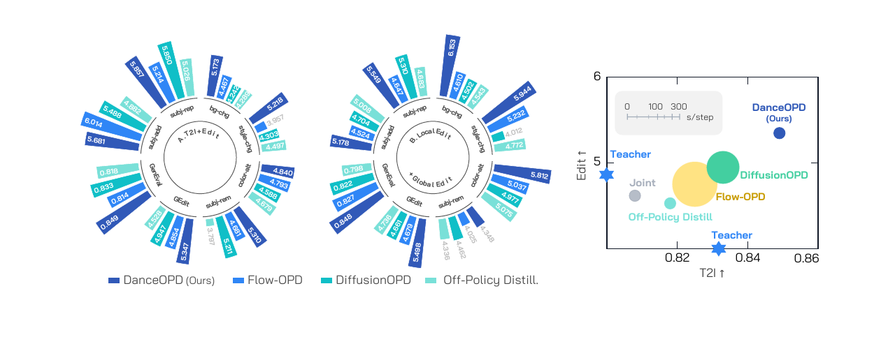
Once each frozen source is viewed as a velocity field over the shared flow state space, capability synthesis depends on three choices: which field supervises a sample, where the field is queried, and how many states from a rollout are used.
Softly averaging several source fields can destroy the semantic identity of a capability query. The update may point to no real teacher behavior.
DanceOPD: hard-routed sample-wise field matchingData states or teacher trajectories are off-policy for the student. They miss the states the deployed model actually visits at inference time.
DanceOPD: query on stop-gradient student rollout statesDense states from the same rollout share prompt, noise, dynamics, and history. More states can over-weight one correlated path.
DanceOPD: one low-noise semantic-side queryAdd editing ability while retaining text-to-image prompt following and visual quality.
Fuse preservation-heavy local editing with transformation-heavy global editing.
Move the student toward a quality or style field while keeping base T2I behavior.
Internalize classifier-free guidance as an operator-defined velocity field.
DanceOPD keeps each local target semantically well-defined, queries the target where the current student actually goes, and avoids dense correlated supervision. The full update is a local field-matching step on a stop-gradient rollout state.
Keep one semantic target per sample instead of averaging teachers.
Ask the frozen field at a state from the current student rollout.
The selected field and student velocity meet in one local MSE.
Classifier-free guidance is another velocity field to distill.
Each sample chooses exactly one frozen capability field. Unless stated otherwise, active capability buckets use a uniform route ratio.
The target field is queried at sg(ztθ), exposing the teacher to student-visited states without backpropagating through the solver.
Low-noise states concentrate edit, style, and visual-attribute signals; one query avoids within-rollout correlation.
The desired behavior is not a midpoint between specialists. A single student should strengthen the target capability while preserving the anchor capability under the same deployment model.
+8.1% over the best reproduced OPD baseline and +8.5% over the edit source on GEditBench.
+16.1% over the best competing composition baseline and +7.9% over the local edit source.
| Method | GEditBench Avg ↑ | GenEval Overall ↑ | Takeaway |
|---|---|---|---|
| Joint training | 4.617 | 0.808 | Mixed supervision dilutes edit capability. |
| Weight merge | - | 0.836 | Preserves T2I but collapses editing. |
| Off-policy distill. | 4.528 | 0.818 | Teacher states leave a train–inference mismatch. |
| DiffusionOPD | 4.947 | 0.833 | Improves editing but below DanceOPD. |
| Flow-OPD | 4.854 | 0.814 | OPD baseline still suffers capability interference. |
| DanceOPD | 5.347 | 0.849 | Best edit score and best GenEval in this block. |
| Method | GEditBench Avg ↑ | GenEval Overall ↑ | Takeaway |
|---|---|---|---|
| Joint training | 4.546 | 0.821 | Conflict between preservation and transformation. |
| Weight merge | 4.715 | 0.811 | Static parameter interpolation remains a compromise. |
| Off-policy distill. | 4.736 | 0.798 | Target ability improves less and T2I drops. |
| DiffusionOPD | 4.661 | 0.822 | Below DanceOPD on both metrics. |
| Flow-OPD | 4.679 | 0.827 | Stable but not enough to fuse local/global behaviors. |
| DanceOPD | 5.498 | 0.848 | Best capability synthesis in the harder conflict setting. |
| Source | GEditBench Avg ↑ | GenEval Overall ↑ | Role |
|---|---|---|---|
| T2I | — | 0.832 | Anchor generation field. |
| Edit | 4.930 | 0.711 | General edit source. |
| Local Edit | 5.095 | 0.793 | Preservation-heavy source. |
| Global Edit | 3.750 | 0.808 | Transformation-heavy source. |
The latest ablations show that failures are not simply about loss naming or training length. They trace back to query construction: ambiguous targets, off-policy states, and correlated dense trajectory samples.
5.751 hard-routed MSE vs. 4.994 soft-teacher MSE. Averaging all teachers erases capability identity.
At 2k steps, low-t reaches 5.751, above median-t 4.649 and high-t 4.813.
K=1 reaches 5.751; weighted K=4 drops to 5.330, and weighted K=16 drops to 5.127.
At 2k steps, 8/16/20/28 rollout steps stay in a practical band; 16 steps gives 5.751 / 0.858.
Velocity MSE reaches 5.751, outperforming timestep weighting, KL weighting, DMD-style, SDS-style, and consistency variants.
Training α and inference β multiply approximately. Best measured composition is 5.833; over-guided αβ=49 drops to 4.015.
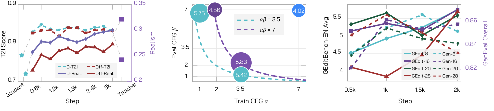
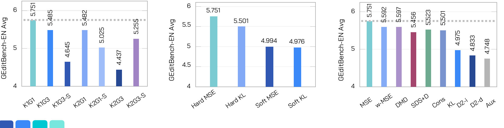
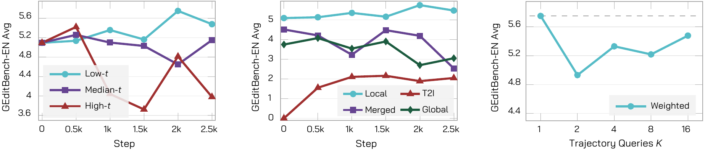
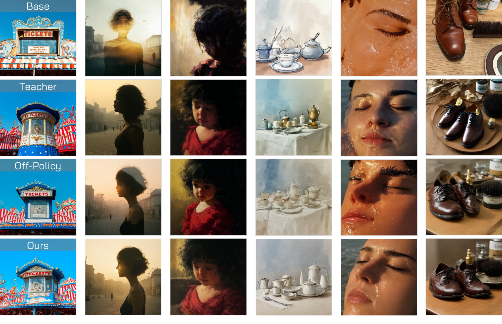
The gallery follows the manuscript organization: global edits, local/global edits, additional material and style edits, pure T2I preservation, same-object transformations, and local/global training progression.
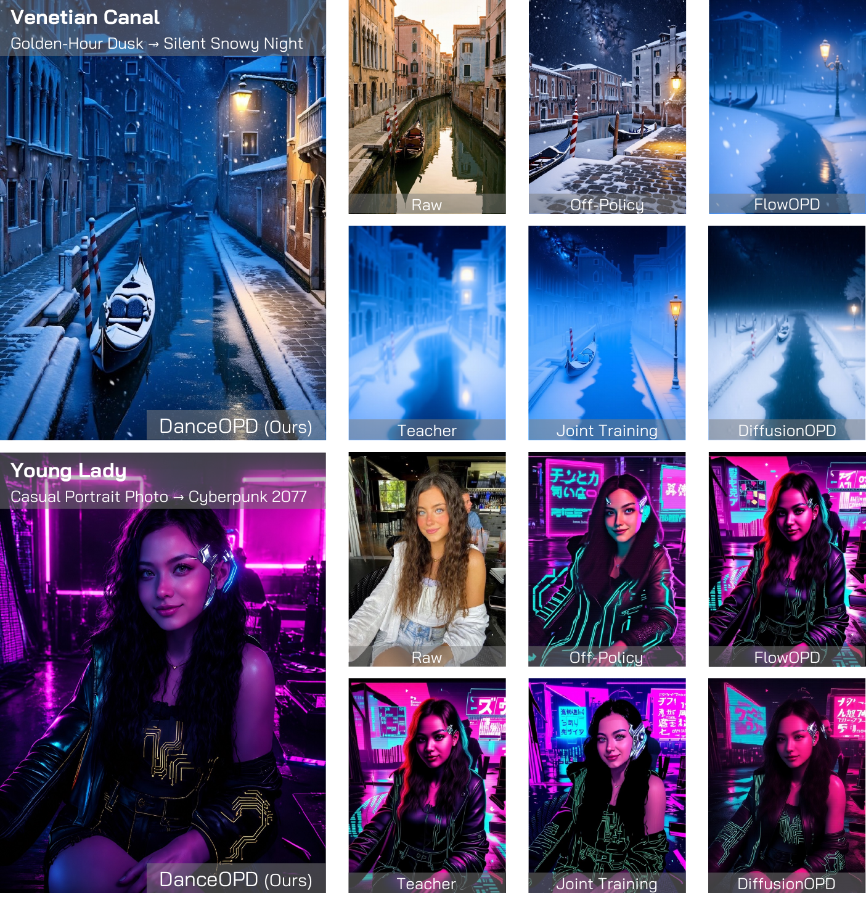
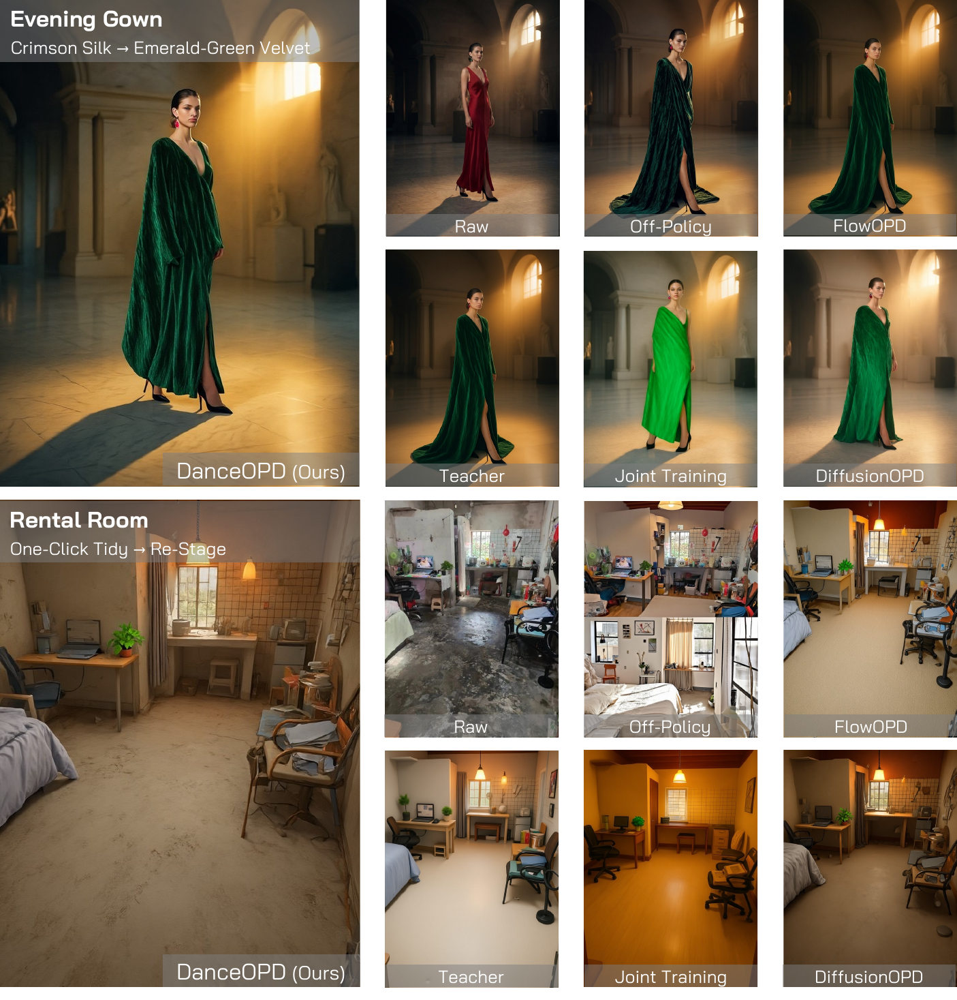
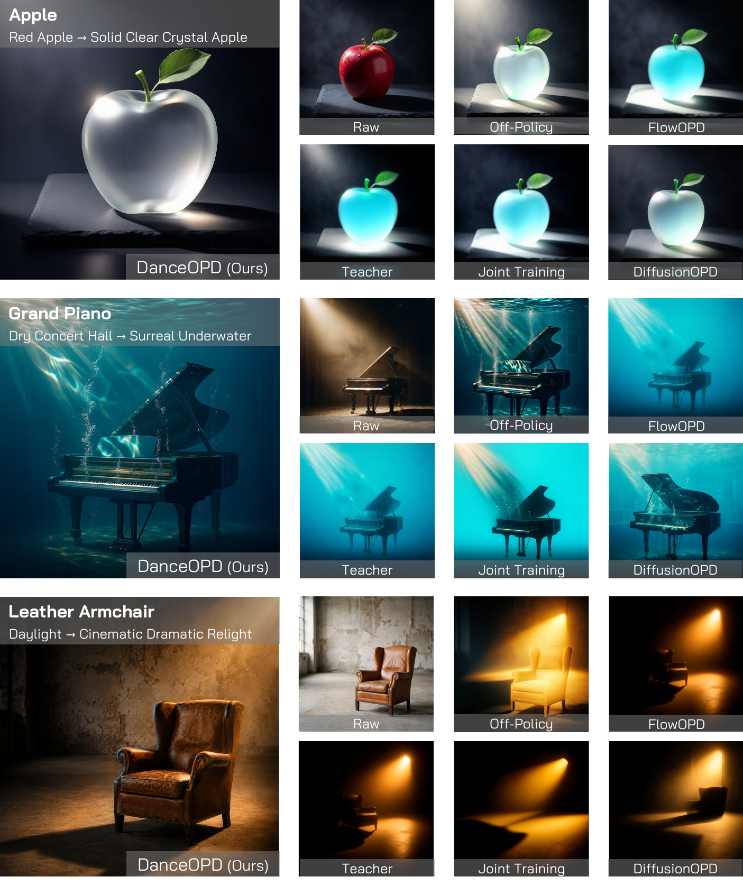
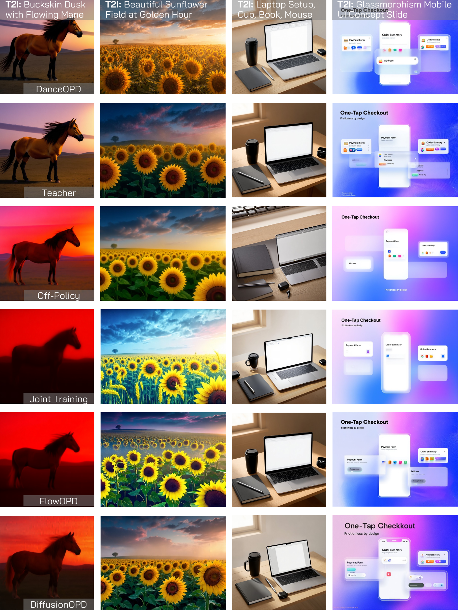
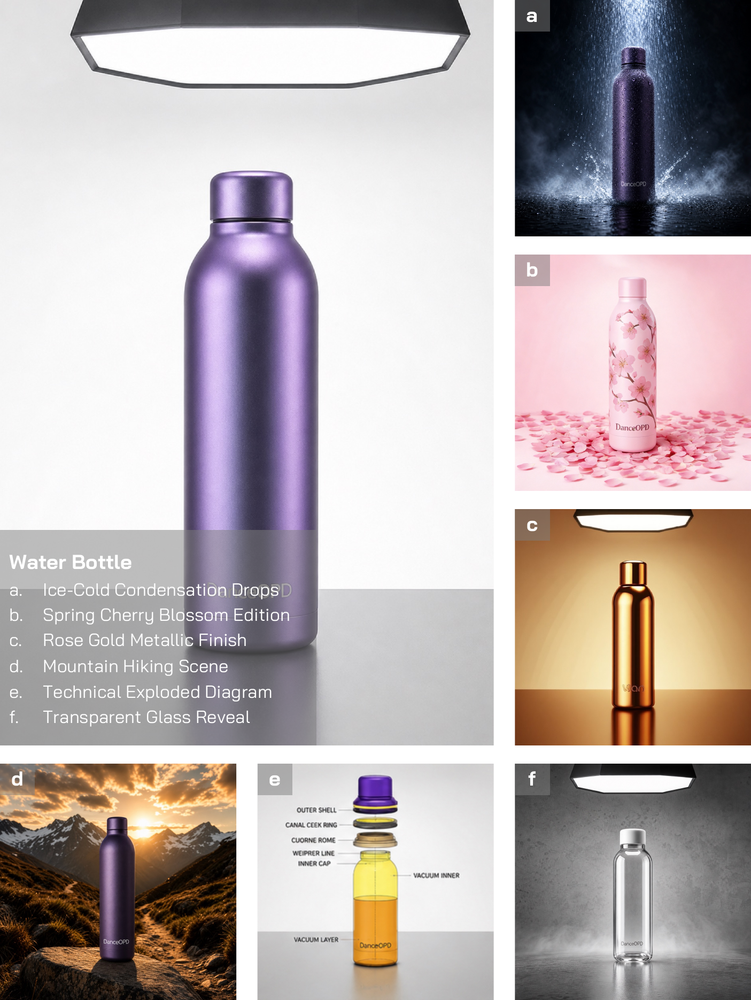
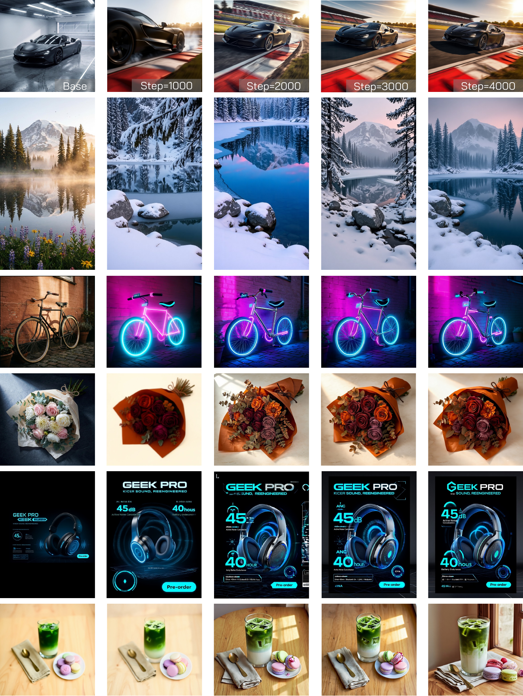
arXiv:2606.27377 is now available. Code will be added once it is released.
@misc{zhou2026danceopdonpolicygenerativefield,
title={DanceOPD: On-Policy Generative Field Distillation},
author={Wei Zhou and Xiongwei Zhu and Zelin Xu and Bo Dong and Lixue Gong and Yongyuan Liang and Meng Chu and Leigang Qu and Lingdong Kong and Wei Liu and Tat-Seng Chua},
year={2026},
eprint={2606.27377},
archivePrefix={arXiv},
primaryClass={cs.CV},
url={https://arxiv.org/abs/2606.27377},
}